5. Creating, Changing and Removing Tables
Creating tables
OmniDB has a table creation interface that lets you configure columns, constraints and indexes. A couple of observations should be mentioned:
- Most DBMS automatically create indexes when primary keys and unique constraints are created. Because of that, the indexes tab is only available after creating the table.
- Each DBMS has its unique characteristics and limitations regarding table creation and the OmniDB interface reflects these limitations. For instance, SQLite does not allow us to change existing columns and constraints. Because of that, the interface lets us change only table name and add new columns when dealing with SQLite databases (it is still not the case in OmniDB Python version, as it currently supports only PostgreSQL databases).
We will create example tables (customers and addresses) in the testdb
database we connected to earlier. Right click on the Tables node and select
the Create Table (GUI) action:
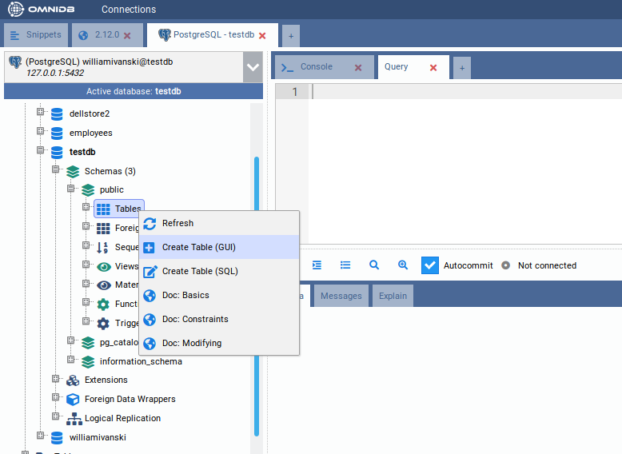
We will create the table customers with a primary key that will be referenced by the table addresses:
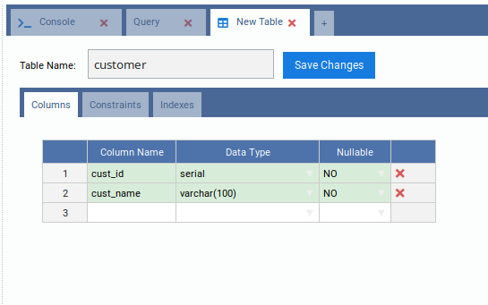
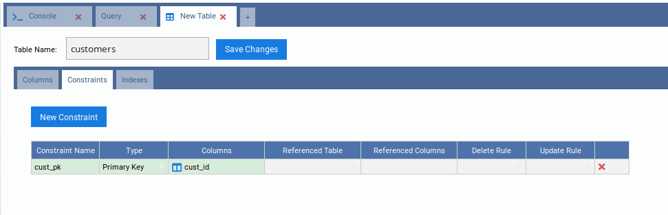
Click on the Save Changes button. Right-click the Tables tree node and click Refresh. Note how the table appers in the Tables tree node:
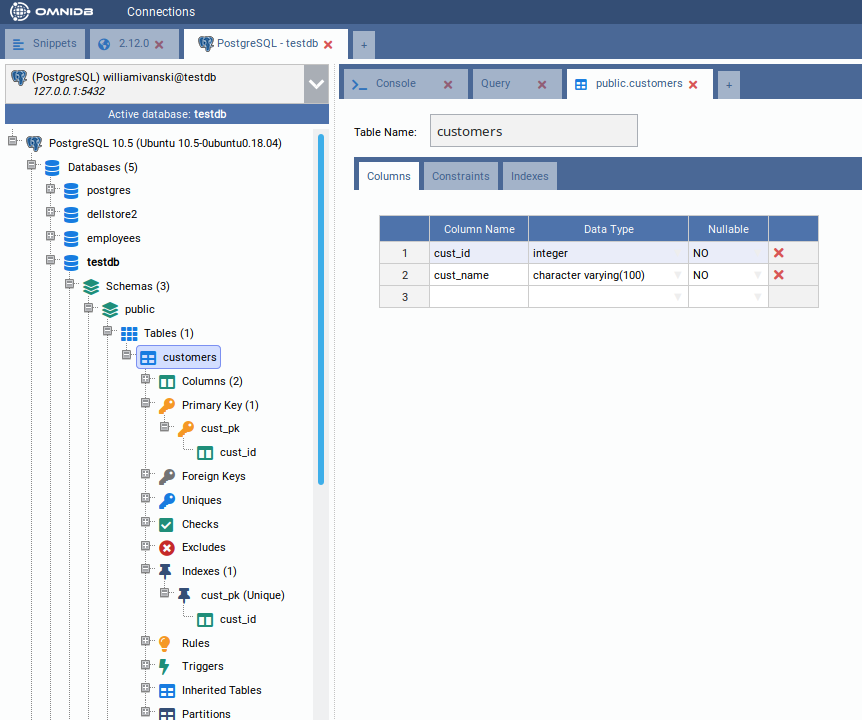
By keeping the table customers selected in the treeview, check its properties and DDL:
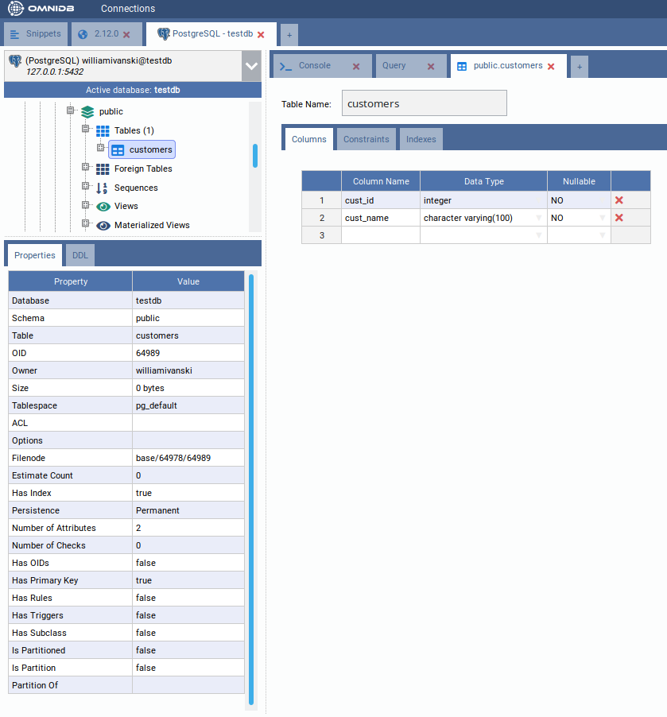
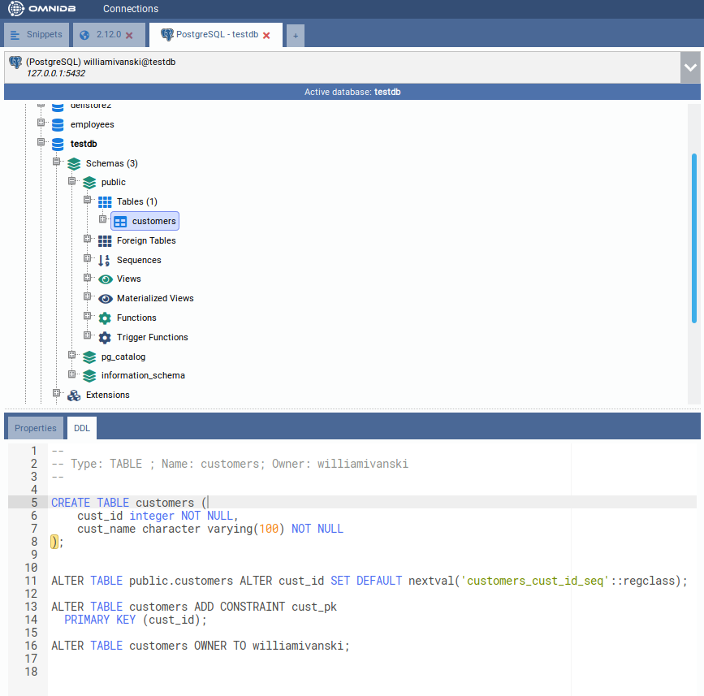
Now create the table addresses with a primary key and a foreign key:
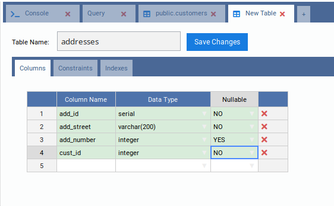
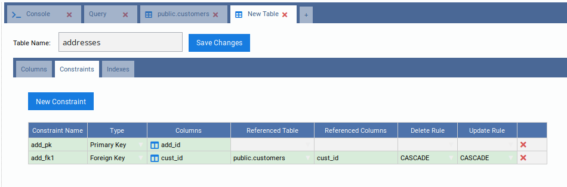
Don't forget to click on the Save Changes button when done. At this point we
have two tables in schema public. The schema structure can be seen with the
graph feature by right clicking on the schema public node of the tree and
selecting Render Graph > Simple Graph:
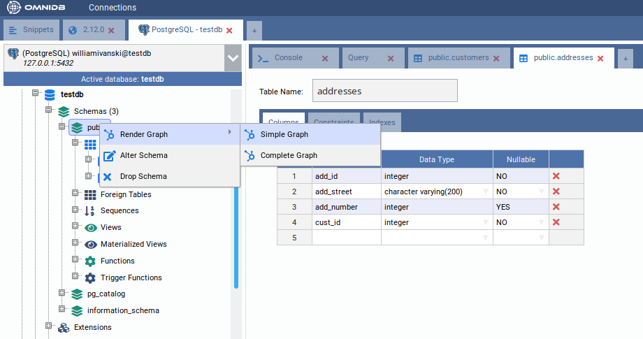
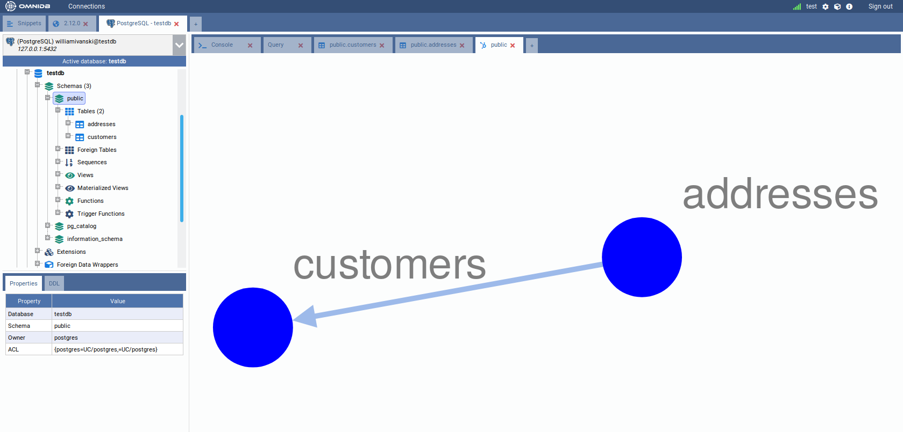
And this is what the Complete Graph looks like:
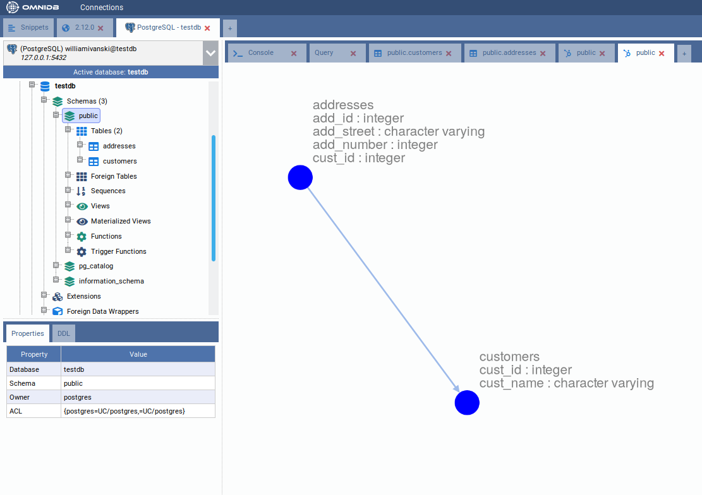
Editing tables
OmniDB also lets you edit existing tables (always following DBMS limitations). To test this feature we will add a new column to the table customers. To access the alter table interface just right click the table node and select the action Table Actions > Alter Table:
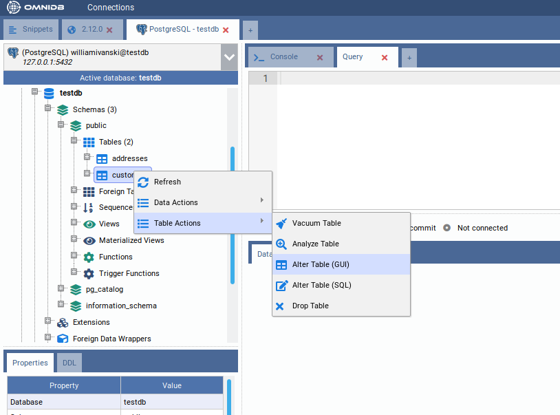
Add the column cust_age and save:
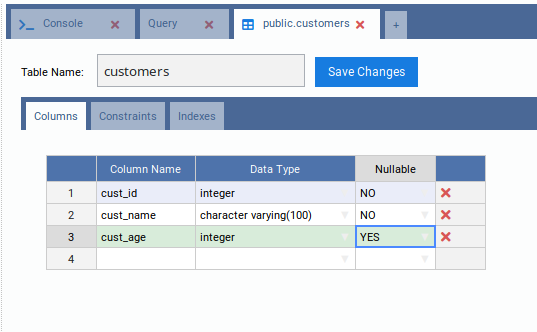
The interface is capable of detecting errors that may occur during alter table operations, showing the command and the error that occurred. To demonstrate it we will try to add the column cust_name, which already belongs to this table:
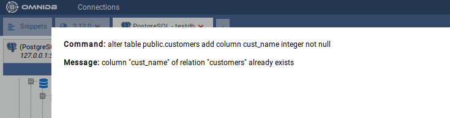
Removing tables
In order to remove a table just right click the table node and select the action Table Actions > Drop Table:
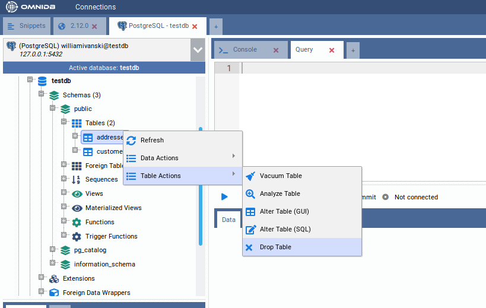